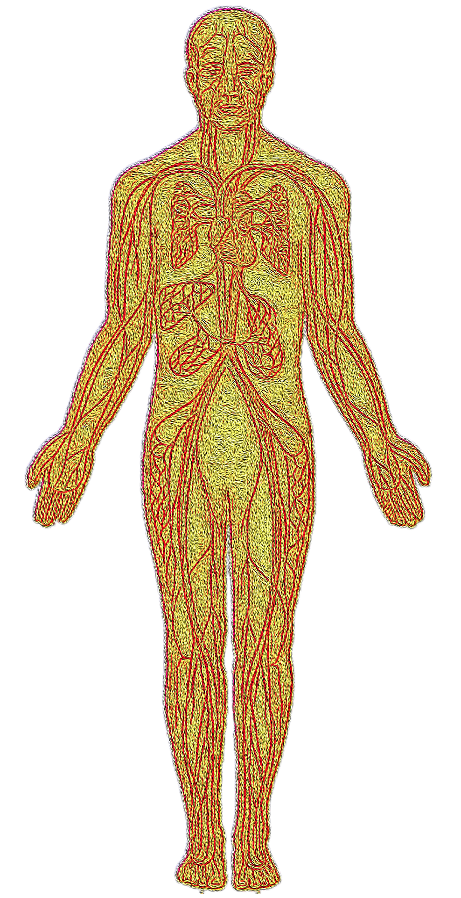

The vascular system
The vasculature is a network of blood vessels connecting the heart with all other organs and tissues in the body. Arteries and arterioles bring oxygen-rich blood and nutrients from the heart to the organs and tissues, while venules and veins carry deoxygenated blood back to the heart. The exchange of gases and transfer of nutrients between blood and tissues take place in the capillaries. A solid understanding of how the vasculature works is key to understanding what can go wrong with it.

Jarvis S (2018) Vascular system 1: anatomy and physiology. Nursing Times [online]; 114: 4, 40-44.